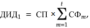
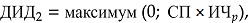
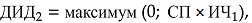

Приложение №1
Инвестиционная декларация
к договору страхования по программе «{{policy.product}}»
№ {{policy.number}} от {{policy.issueDate}} г. (далее – Декларация)

Страховщик: ООО СК «Росгосстрах Жизнь».
Лицензии Банка России: {{insurer.license}}, ИНН {{insurer.INN}}, КПП {{insurer.KPP}}
Юридический адрес: {{insurer.address}}
Реквизиты банка: {{bankInfo}}
Телефон круглосуточного Контакт-центра: 8 800 100 12 10 (бесплатный номер для
звонков по России).
Для оплаты считайте данный штрих код
в мобильном приложении интернет-банка
ДОГОВОР СТРАХОВАНИЯ № {{policy.number}} от {{policy.issueDate}} г.
по программе «{{policy.product}}»
на основании {{policy.rule}}
(далее по тексту – Правила).
| Фамилия Имя Отчество: | {{holder.fullName}} | Пол: | {{holder.gender}} | |||
| Дата рождения: | {{holder.dateOfBirth}} | Место рождения: | {{holder.birthPlace}} | |||
| Телефон: | {{holder.phoneNumber}} | Гражданство: | {{holder.citizenship}} | |||
| E-mail: | {{holder.email}} | |||||
| Документ, удостоверяющий личность: | {{holder.document.typeAndSN}} | Дата выдачи: | {{holder.document.dateOfIssue}} | |||
| Кем выдан: | {{holder.document.issuedBy}} | |||||
| Адрес постоянной регистрации: | {{holder.registrationAddress}} | |||||
| Почтовый адрес: | {{holder.postAddress}} | |||||
| Фамилия Имя Отчество: | {{insured.fullName}} | Пол: | {{insured.gender}} | |||
| Дата рождения: | {{insured.dateOfBirth}} | Место рождения: | {{insured.birthPlace}} | |||
| Телефон: | {{insured.phoneNumber}} | Гражданство: | {{insured.citizenship}} | |||
| E-mail: | {{insured.email}} | |||||
| Документ, удостоверяющий личность: | {{insured.document.typeAndSN}} | Дата выдачи: | {{insured.document.dateOfIssue}} | |||
| Кем выдан: | {{insured.document.issuedBy}} | |||||
| Адрес постоянной регистрации: | {{insured.registrationAddress}} | |||||
| Почтовый адрес: | {{insured.postAddress}} | |||||
| Выгодоприобретатель {{this.index}}. Доля {{this.percentage}}% | ||||||
| Фамилия Имя Отчество: | {{this.beneficiar.fullName}} | Пол: | {{this.beneficiar.gender}} | |||
| Дата рождения: | {{this.beneficiar.dateOfBirth}} | Место рождения: | {{this.beneficiar.placeOfBirth}} | |||
| Телефон: | {{this.beneficiar.phoneNumber}} | E-mail: | {{this.beneficiar.email}} | Гражданство: | {{this.beneficiar.citizenship}} | |
| Документ, удостоверяющий личность: | {{this.beneficiar.document.typeAndSN}} | Дата выдачи: | {{this.beneficiar.document.dateOfIssue}} | |||
| Кем выдан: | {{this.beneficiar.document.document.issuedBy}} | |||||
| Адрес постоянной регистрации: | {{this.beneficiar.registrationAddress}} | |||||
| Почтовый адрес: | {{this.beneficiar.postAddress}} | |||||
В случае если общая доля менее 100%, Выгодоприобретателями на случай смерти Застрахованного по оставшейся доле являются наследники Застрахованного по закону.
{{/if}} {{else}}Наследники по закону
{{/if}}| Страховые риски | Страховая сумма, {{currency}} | Страховая премия, {{currency}} | Срок страхования по риску | |
| с | по | |||
| {{risk.premium.sum}} | ||||
| {{this.insuranceRisks}} | {{this.sumInsured}} | {{this.startDate}} | {{this.endDate}} | |
| {{this.insuranceRisks}} | {{this.sumInsured}} | {{this.startDate}} | {{this.endDate}} | |
При определении страховой суммы в договоре страхования в иностранной валюте страховая выплата производится в рублях по курсу Банка России на дату выплаты. Банковские расходы, связанные с осуществлением страховой выплаты, оплачиваются получателем платежа.
| Страховая премия уплачивается единовременно в полном объеме не позднее: | {{experationDate}} | |
В случае если страховая премия не была оплачена (или была оплачена не полностью) в указанный срок,
{{#if insuranceTerms.paymentPeriodLastDate}} либо в случае оплаты страховой премии позднее {{insuranceTerms.paymentPeriodLastDate}}, {{/if}}
Страховщик вправе считать договор страхования не вступившим в силу и произвести возврат поступивших
средств Страхователю.
При определении страховой премии в договоре страхования в иностранной валюте сумма, подлежащая
уплате в
рублях, определяется по курсу Банка России соответствующей валюты на дату оплаты. Банковские расходы,
связанные с оплатой страховой премии, несет Страхователь.
| Срок действия договора страхования: | {{insuranceTerms.text}} | Договор страхования вступает в силу с {{insuranceTerms.startDate}} при условии уплаты страховой премии в полном объеме и действует до {{insuranceTerms.endDate}} включительно. |
При расторжении договора страхования до истечения 30 (тридцати) календарных дней со дня уплаты Страхователем страховой премии выкупная сумма определяется в размере уплаченной Страхователем страховой премии. По истечении 30 (тридцати) календарных дней со дня уплаты Страхователем страховой премии выкупная сумма определяется в пределах сформированного в установленном порядке страхового резерва на день прекращения договора страхования.
| Период действия договора страхования | Выкупная сумма, {{currency}} | |
| начало | окончание | |
| {{this.periodStartDate}} | {{this.periodEndDate}} | {{this.surrenderValue}} |
При определении выкупной суммы в договоре страхования в иностранной валюте выплата выкупной суммы переводится в рублях по курсу Банка России на дату выплаты. Банковские расходы, связанные с осуществлением выплаты выкупной суммы, оплачиваются получателем платежа.
| Настоящим я, {{insured.fullName}}, | подтверждаю, что: | не подтверждаю, что: |
{{this}}
| Настоящим Страхователь и Застрахованный | подтверждают, что: | не подтверждают, что: |
{{this}}
Приложение №1
Инвестиционная декларация
к договору страхования по программе «{{policy.product}}»
№ {{policy.number}} от {{policy.issueDate}} г. (далее – Декларация)
Общие положения
В настоящей Декларации используются следующие определения и термины:
Актив Инвестиционной части – инвестиционный инструмент, динамика (изменение цены) и денежные поступления от которого определяют величину дополнительного инвестиционного дохода (далее – ДИД). Описание Актива Инвестиционной части и его основные характеристики указываются в п. {{#if isAfter20221101}}2.2{{else}}2.1{{/if}} Декларации.
Первоначальная доля Инвестиционной части (далее – ИЧ) – параметр, выраженный в долях (процентах) от страховой премии, определяющий долю средств, инвестированных в Актив Инвестиционной части. Значение первоначальной доли Инвестиционной части указано в п. {{#if isAfter20221101}}2.3{{else}}2.2{{/if}} Декларации.
Эмитент – организация, выпустившая инвестиционный инструмент, приобретенный за счет средств Инвестиционной части, денежные поступления от которого определяют размер ДИД.
Ставка фиксации – параметр, выраженный в долях (процентах) от страховой премии, который определяет размер регулярной выплаты из средств Инвестиционной части.
Дивиденды – это доля от прибыли от Актива Инвестиционной части, которую Эмитент распределяет между своими акционерами в соответствии с их долей в компании.
Период инвестирования – период, в течение которого средства Инвестиционной части были фактически инвестированы и за который выплачивается ДИД или его часть.
Структура продукта
1.1. Страховщик за счет средств страховой премии формирует Гарантийный фонд и Инвестиционную часть с целью исполнения обязательств по договору страхования.
1.2. Гарантийный фонд – набор инвестиционных инструментов, приобретенных за счет части страховой премии и обеспечивающих выполнение обязательств Страховщика по выплате гарантированных страховых и выкупных сумм. Средства Гарантийного фонда размещаются в консервативные инструменты, такие как облигации федерального займа Российской Федерации (ОФЗ), облигации субъектов Российской Федерации, облигации, обязательства по которым гарантированы Российской Федерацией, а также другие инструменты.
1.3. Инвестиционная часть – набор инвестиционных инструментов, приобретенных за счет части страховой премии и обеспечивающих зависимость стоимости Инвестиционной части (денежных поступлений от инструментов Инвестиционной части) от стоимости Актива Инвестиционной части в течение периода между датой начала расчета ДИД и датой окончания расчета ДИД. Стоимость инструментов Инвестиционной части (денежные поступления от инструментов Инвестиционной части) определяют размер ДИД.
{{#if isAfter20221101}}Параметры Инвестиционной части
2.1. Актив Инвестиционной части: {{investmentStrategyDescriptionFull}}.
2.2. Описание Актива Инвестиционной части: {{baseActiveDescription}}.
2.3. Первоначальная доля Инвестиционной части: {{dataBasicInvestment.intialShare}}%
2.4. Период расчета ДИД: дата начала расчета ДИД – {{purchaseDate}}, дата окончания расчета ДИД – {{dischargeDate}}.
2.5. Процентные периоды:
| Номер процентного периода, t | Дата начала периода (включительно) | Дата окончания периода (включительно) | Ставка фиксации, СФt % |
| {{this.year}} | {{this.periodStartDate}} | {{this.periodEndDate}} | {{this.fixRate}} {{#if ZenithPartner}}%{{/if}} |
2.6. Эмитент: {{dataBasicInvestment.emitent}}
{{else}}Параметры Инвестиционной части
2.1. Актив Инвестиционной части: {{baseActiveDescription}}.
2.2. Первоначальная доля Инвестиционной части: {{dataBasicInvestment.intialShare}}%
2.3. Период расчета ДИД: дата начала расчета ДИД – {{purchaseDate}}, дата окончания расчета ДИД – {{dischargeDate}}.
2.4. Процентные периоды:
| Номер процентного периода, t | Дата начала периода (включительно) | Дата окончания периода (включительно) | Ставка фиксации, СФt % |
| {{this.year}} | {{this.periodStartDate}} | {{this.periodEndDate}} | {{this.fixRate}} |
2.5. Эмитент: {{dataBasicInvestment.emitent}}
{{/if}}Порядок расчета дополнительного инвестиционного дохода (ДИД)
3.1. Дополнительный инвестиционный доход рассчитывается в валюте страхования и состоит из трех частей:

Где ДИД1 рассчитывается по итогам каждого процентного периода в течение срока страхования
на соответствующую дату окончания процентного периода;
ДИД2 рассчитывается при
наступлении страхового случая по рискам «Дожитие Застрахованного до окончания срока страхования»
(далее – Дожитие), «Смерть Застрахованного по любой причине» (далее – «Смерть») и при досрочном
прекращении договора страхования по причинам иным, чем наступление страхового случая по риску
«Смерть»;
ДИД3 определяется Страховщиком по итогам каждого процентного периода в течение срока
страхования.
3.2. Текущая доля Инвестиционной части рассчитывается на конец каждого процентного периода t:

А также на дату досрочного прекращения договора p (на дату досрочного прекращения договора страхования или на дату принятия решения о страховой выплате при наступлении страхового случая по риску «Смерть»):

Где ИЧt – доля Инвестиционной части на конец процентного периода t; ИЧp – доля Инвестиционной части на дату досрочного прекращения договора p; ИЧt-1– доля Инвестиционной части на конец процентного периода, предшествующего процентному периоду t (для t=1 ИЧt-1– первоначальная доля Инвестиционной части); ИЧp-1– доля Инвестиционной части на конец последнего процентного периода, завершенного к дате досрочного прекращения договора p (если досрочное прекращение договора происходит в течение первого процентного периода, то ИЧp-1 – первоначальная доля Инвестиционной части); xt – значение (цена) Актива Инвестиционной части на закрытие торгового дня в последний день процентного периода t; xp – значение (цена) Актива Инвестиционной части на закрытие торгового дня на дату досрочного прекращения договора p; xt-1 – значение (цена) Актива Инвестиционной части на закрытие торгового дня в последний день процентного периода, предшествующего процентному периоду t (для t=1 xt-1 – значение (цена) Актива Инвестиционной части на дату начала расчета ДИД); xp-1 – значение (цена) Актива Инвестиционной части на закрытие торгового дня в последний день последнего процентного периода, завершенного к дате досрочного прекращения договора p (если досрочное прекращение договора происходит в течение первого процентного периода, то xp-1 – значение (цена) Актива Инвестиционной части на дату начала расчета ДИД); СФt – ставка фиксации, соответствующая процентному периоду t.
Для целей расчета доли Инвестиционной части используются котировки (значения Актива Инвестиционной части), публикуемые Эмитентом на российской бирже. В случае отсутствия котировки (значения Актива Инвестиционной части) на закрытие торгового дня на соответствующую дату, опубликованной в выше перечисленных источниках, а также в случае выходного или праздничного дня в юрисдикции Эмитента, используется котировка на следующий день.
3.3. ДИД1 рассчитывается на любую дату x в течение срока действия договора страхования как произведение страховой премии на сумму ставок дохода за все завершенные процентные периоды на дату x, включая ставку за последний завершенный процентный период t:

Где СП – страховая премия по договору страхования; СФm – ставка дохода, соответствующая процентному периоду m; t – порядковый номер последнего процентного периода, завершенного на дату х.
3.4. Размер ДИД2 рассчитывается следующим образом:
3.4.1. Размер ДИД2 на дату начала расчета ДИД равен 0 (нулю).
3.4.2. При досрочном прекращении договора страхования или при наступлении страхового случая по риску «Смерть»:

3.4.3. При наступлении страхового случая по риску «Дожитие»:

Где СП – страховая премия по договору страхования; ИЧp – доля Инвестиционной части на дату досрочного прекращения договора страхования или на дату принятия решения о страховой выплате при наступлении страхового случая по риску «Смерть»; ИЧ1 – доля Инвестиционной части на конец последнего процентного периода.
3.5. ДИД3 составляют дивиденды от Эмитента инвестиционного инструмента, выступающего в качестве Актива Инвестиционной части. Решение о выплате дивидендов принимается Эмитентом в соответствии с его дивидендной политикой. Датой принятия решения о выплате дивидендов Эмитентом, является дата, опубликованная на официальном сайте Эмитента. После принятия решения о выплате дивидендов Эмитентом, Страховщик с использованием способа коммуникации, предусмотренного правилами страхования, определяет и объявляет ДИД3 в течение срока страхования, но не позднее 3 месяцев по истечении каждого процентного периода.
Порядок выплаты ДИД
4.1. В случае досрочного прекращения договора страхования по причинам иным, чем наступление страхового случая, выплате подлежит ДИД, рассчитанный на дату прекращения договора страхования за минусом суммы фактически выплаченного ДИД.
4.2. В случае обращения Застрахованного (или иного лица, в пользу которого заключен Договор страхования по риску «Дожитие») в течение срока страхования за выплатой ДИД (или его части), выплате подлежит ДИД (или его часть), рассчитанный (объявленный) на дату обращения, за минусом суммы фактически выплаченного ДИД.
4.3. При наступлении страхового случая по риску «Дожитие» выплате подлежит ДИД, рассчитанный на дату окончания срока страхования за минусом суммы фактически выплаченного ДИД.
4.4. При наступлении страхового случая по риску «Смерть» выплате подлежит ДИД, рассчитанный на дату принятия решения о страховой выплате за минусом суммы фактически выплаченного ДИД.
4.5. Выплата ДИД осуществляется в течение 3 месяцев после даты окончания фактического периода инвестирования.
Основные риски
5.1. Инвестирование связано с принятием рисков. Цель настоящего раздела – предоставить Страхователю информацию о рисках, связанных с инвестированием, а также предупредить о возможных потерях, которые могут негативно повлиять на стоимость инструментов Инвестиционной части, размер ДИД и возможность его выплаты. В случае реализации рисков, указанных в настоящем разделе (и в зависимости от их характера), Страховщик вправе полностью или в течение определенного периода времени не распределять, не начислять и не выплачивать ДИД.
5.2. Рыночный риск: риск потерь в результате возникновения неблагоприятных событий экономического характера, выражающихся, например, в негативной динамике Актива Инвестиционной части или одного или нескольких его компонентов, валютного курса и др.
5.3. Кредитный риск: риск потерь в результате полного или частичного неисполнения обязательств Эмитентом, инвестиционным брокером, через которого осуществляются операции, а также прочими участниками, задействованными в операциях по перечислению денежных средств.
5.4. Риск изменения кредитного качества Эмитента, риск замены Эмитента и Актива Инвестиционной части, выпускаемого Эмитентом. Кредитное качество Эмитента может как улучшаться, так и ухудшаться в течение срока действия договора.
5.5. Риск вторичного рынка. Котировки на продажу инвестиционных инструментов Инвестиционной части, на основании которых производится расчет ДИД при досрочном прекращении договора страхования или при наступлении страхового случая по риску «Смерть», определяется и публикуются Эмитентом. Страховщик не может оказывать влияние на котировки. В силу указанных выше факторов Страхователь несет риск снижения стоимости инструментов Инвестиционной части (и, как следствие, ДИД), а также риск самого факта наличия котировки на продажу инструментов Инвестиционной части от Эмитента.
5.6. Калькуляционный риск. Расчет всех параметров осуществляется калькуляционным агентом, который руководствуется принципами добросовестности и справедливости. В случае Фонда в качестве Актива Инвестиционной части или одного из его компонентов: калькуляционный агент вправе временно приостановить расчета Фонда, изменить его состав и/или методику его расчета, также существует риск полного прекращения существования Фонда. В случае Корзины акций или отдельной акции в качестве Актива Инвестиционной части: калькуляционной агент вправе изменить компоненты Корзины и/или скорректировать их цены/скорректировать цену акции с целью отражения справедливого экономического эффекта от некоторых событий, таких как (но не ограничиваясь ими): делистинг акции с биржи, слияние, поглощение или реорганизация компании, консолидация или дробление акций, а также другие корпоративные действия, имеющие размывающее или консолидирующее действие на стоимость акции.
5.7. Риск досрочного погашения инструментов Инвестиционной части. Эмитент на свое разумное усмотрение имеет право досрочно погасить инструменты Инвестиционной части вследствие ряда событий, таких как: прекращение расчета или замена Актива Инвестиционной части, прекращение торговли компонентами Актива Инвестиционной части, значительные изменения условий Актива Инвестиционной части и условий его использования, а также других событий. Сумма, выплачиваемая по инструментам Инвестиционной части в результате досрочного погашения, может быть меньше, чем сумма, которая была бы выплачена в случае отсутствия досрочного погашения.
5.8. Правовой риск. Риск потерь, связанных с появлением новых или изменением (отменой) существующих нормативно-правовых актов в Российской Федерации, а также любых других юрисдикциях, в которых ведут деятельность контрагенты, вовлеченные в процесс выпуска и совершения сделок с инструментами Инвестиционной части, а также инструментами, входящими (напрямую или через фонды) в состав Актива Инвестиционной части.
5.9. Риск, связанный с международными ограничениями (например, введение санкций), ограничивающими права получения инвестиционного дохода по инструментам Инвестиционной части Страховщиком, а также связанный с введением иных ограничений, делающих невозможным размещение средств Инвестиционной части и получение ДИД в соответствии с Декларацией.
5.10. Прочие риски (не отраженные в Декларации вследствие разнообразия ситуаций, возникающих при инвестировании), которые могут повлиять на стоимость Инвестиционной части и, как следствие, на величину ДИД, и на саму возможность выплатить ДИД.
5.11. Страховщик не выступает с инвестиционными рекомендациями и не гарантирует выплату ДИД.